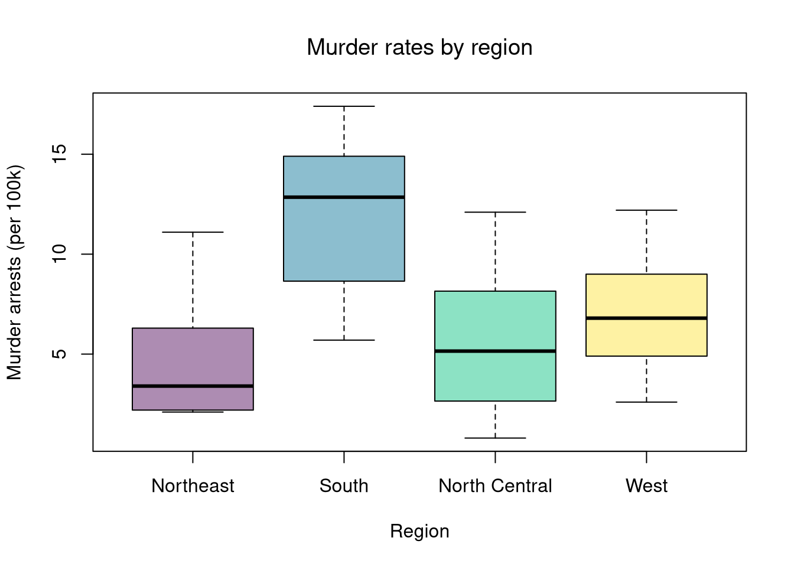

With multiple groups, you will want to begin with a summary figure (such as a boxplot). We can also test the equality of all means or all distributions (whether at least one group is different).
A practical workflow for multiple groups has three steps:
Visualize all groups together.
Run one global test
Run post-hoc pairwise tests with multiplicity correction.
Code
# USArrests grouped by US Census regiondat <- USArrestsdat$Region <- state.region# Step 1: Visual summaryboxplot(Murder ~ Region, data = dat,col =hcl.colors(4, alpha = .45),ylab ="Murder arrests (per 100k)", xlab ="Region", main ="")title("Murder rates by region", font.main =1)

20.1 Equal Means (ANOVA)
In Comparing Groups, we tested whether two groups had the same mean. We now extend this to \(G\) groups. The Analysis of Variance (ANOVA) approach asks: are the observed differences in group means larger than we would expect from random variation alone?
Decomposition.
The key idea is to decompose total variation into between-group and within-group components. Label each observation \(\hat{Y}_{ig}\) for individual \(i\) in group \(g\). Each group \(g=1,\dots,G\) has \(n_g\) observations with group mean \(\hat{M}_{g}\), and the grand mean across all \(n=\sum_g n_g\) observations is \(\hat{M}_{Y}\). Then the total sum of squares decomposes as \[\begin{eqnarray}
\underbrace{\sum_{g=1}^{G}\sum_{i=1}^{n_g}(\hat{Y}_{ig}-\hat{M}_{Y})^2}_{\hat{TSS}}
&=&
\underbrace{\sum_{g=1}^{G} n_g (\hat{M}_{g}-\hat{M}_{Y})^2}_{\hat{BSS}}
\;+\;
\underbrace{\sum_{g=1}^{G}\sum_{i=1}^{n_g}(\hat{Y}_{ig}-\hat{M}_{g})^2}_{\hat{WSS}},
\end{eqnarray}\] where \(\hat{BSS}\) is the between-group sum of squares (variation in group means around the grand mean) and \(\hat{WSS}\) is the within-group sum of squares (variation of observations around their own group mean).
If the group means are all equal, then \(\hat{BSS}\) should be small relative to \(\hat{WSS}\).
The F-statistic.
We test \(H_0: \mu_1=\mu_2=\dots=\mu_G\) versus \(H_A:\) at least one \(\mu_g\) differs. The ANOVA F-statistic is \[\begin{eqnarray}
\hat{F} &=& \frac{\hat{BSS}/(G-1)}{\hat{WSS}/(n-G)}.
\end{eqnarray}\] The numerator is the average between-group variation (per degree of freedom), and the denominator is the average within-group variation. A large \(\hat{F}\) means group means are more spread out than individual-level noise would predict.
Under additional parametric assumptions (independent observations, equal variances, normal errors), \(\hat{F}\) follows an \(F_{G-1,\;n-G}\) distribution. In practice, we can also use permutation or bootstrap methods to build a null distribution, just as in previous chapters.
TipNumerical example
Suppose we have \(G=3\) groups with the following data:
Group A
Group B
Group C
4
8
5
5
7
6
6
9
7
Group means: \(\hat{M}_A = 5\), \(\hat{M}_B = 8\), \(\hat{M}_C = 6\). Grand mean: \(\hat{M}_Y = (5+8+6)/3 = 19/3 \approx 6.33\). Each group has \(n_g = 3\).
Within-group sum of squares: \[\begin{eqnarray*}
\hat{WSS} &=& [(4-5)^2+(5-5)^2+(6-5)^2] + [(8-8)^2+(7-8)^2+(9-8)^2] \\
&& + [(5-6)^2+(6-6)^2+(7-6)^2] = 2+2+2 = 6
\end{eqnarray*}\]
Check: \(\hat{TSS} = 14+6 = 20\).
F-statistic: \(\hat{F} = \frac{14/2}{6/6} = 7\). With \(G-1=2\) and \(n-G=6\) degrees of freedom, we compare to an \(F_{2,6}\) distribution: \(p = 1 - F_{2,6}(7) \approx 0.027\).
In R, aov() fits the ANOVA model and summary() returns the standard ANOVA table. Equivalently, anova() applied to a regression with a single factor gives the same result.
Code
# USArrests grouped by US Census regiondat <- USArrestsdat$Region <- state.region# Fit ANOVAfit_aov <-aov(Murder ~ Region, data = dat)summary(fit_aov)## Df Sum Sq Mean Sq F value Pr(>F) ## Region 3 391.2 130.4 11.14 1.28e-05 ***## Residuals 46 538.3 11.7 ## ---## Signif. codes: 0 '***' 0.001 '**' 0.01 '*' 0.05 '.' 0.1 ' ' 1
The ANOVA table reports \(\hat{BSS}\) (“Sum Sq” for Region), \(\hat{WSS}\) (“Sum Sq” for Residuals), and the \(F\)-statistic with its \(p\)-value.
Code
# Equivalent via lmfit_lm <-lm(Murder ~ Region, data = dat)anova(fit_lm)## Analysis of Variance Table## ## Response: Murder## Df Sum Sq Mean Sq F value Pr(>F) ## Region 3 391.24 130.412 11.144 1.282e-05 ***## Residuals 46 538.32 11.703 ## ---## Signif. codes: 0 '***' 0.001 '**' 0.01 '*' 0.05 '.' 0.1 ' ' 1
Assumptions and alternatives.
The parametric F-test assumes (i) independent observations, (ii) normal errors within each group, and (iii) equal variances across groups (homoscedasticity). If these assumptions are doubtful, then the nonparametric Kruskal-Wallis test (below) is a safer alternative. As a quick diagnostic, visually compare side-by-side boxplots: if the spread differs across groups or the distribution has excessive skew/kurtosis, be cautious with the parametric test.
20.2 Equal Distributions
The Kruskal-Wallis test examines \(H_0:\; F_1 = F_2 = \dots = F_G\) versus \(H_A:\) at least one \(F_g\) differs, where \(F_g\) is the continuous distribution of group \(g=1,...G\). This test does not tell us which group is different.
To conduct the test, first denote individuals \(i=1,...n\) with overall ranks \(\hat{r}_1,....\hat{r}_{n}\). Each individual belongs to group \(g=1,...G\), and each group \(g\) has \(n_{g}\) individuals with average rank \(\bar{r}_{g} = \sum_{i} \hat{r}_{i} /n_{g}\). The Kruskal Wallis statistic is \[\begin{eqnarray}
\hat{KW} &=& (n-1) \frac{\sum_{g=1}^{G} n_{g}( \bar{r}_{g} - \bar{r} )^2 }{\sum_{i=1}^{n} ( \hat{r}_{i} - \bar{r} )^2},
\end{eqnarray}\] where \(\bar{r} = \frac{n+1}{2}\) is the grand mean rank.
In the special case with only two groups, the Kruskal Wallis test reduces to the Mann–Whitney U test (also known as the Wilcoxon rank-sum test). In this case, we can write the hypotheses in terms of individual outcomes in each group, \(Y_i\) in one group \(Y_j\) in the other; \(H_0: Prob(Y_i > Y_j)=Prob(Y_i > Y_i)\) versus \(H_A: Prob(Y_i > Y_j) \neq Prob(Y_i > Y_j)\). The corresponding test statistic is \[\begin{eqnarray}
\hat{U} &=& \min(\hat{U}_1, \hat{U}_2) \\
\hat{U}_g &=& \sum_{i\in g}\sum_{j\in -g}
\Bigl[\mathbf 1( \hat{Y}_{i} > \hat{Y}_{j}) + \tfrac12\mathbf 1(\hat{Y}_{i} = \hat{Y}_{j})\Bigr].
\end{eqnarray}\]
Interpretation template:
If the Kruskal-Wallis p-value is large, keep the global null and stop.
If the p-value is small, report that at least one group differs and then inspect adjusted pairwise p-values.
Report both statistical and practical importance (distribution plots + effect size summaries), not only p-values.
Code
# Step 2: Global null testkw <-kruskal.test(Murder ~ Region, data = dat)kw## ## Kruskal-Wallis rank sum test## ## data: Murder by Region## Kruskal-Wallis chi-squared = 19.345, df = 3, p-value = 0.000232# Step 3: Post-hoc pairwise tests, adjusted p-valuespw <-pairwise.wilcox.test(x = dat$Murder, g = dat$Region,p.adjust.method ="bonferroni")pw$p.value## Northeast South North Central## South 0.003660173 NA NA## North Central 1.000000000 0.007496818 NA## West 0.427842562 0.018410457 1
20.3 Regression
ANOVA is a special case of linear regression where the only explanatory variables are group indicators. To see this, we first introduce factor variables and then make the connection.
Factor Variables.
So far, we have discussed cardinal data where the difference between units always means the same thing: e.g., \(4-3=2-1\). There are also factor variables
Ordered: refers to Ordinal data. The difference between units means something, but not always the same thing. For example, \(4th - 3rd \neq 2nd - 1st\).
Unordered: refers to Categorical data. The difference between units is meaningless. For example, \(D-C=?\)
To analyze either factor, we often convert them into indicator variables or dummies; \(\hat{D}_{c}=\mathbf{1}( \text{Factor} = c)\). One common case is if you have observations of individuals over time periods, then you may have two factor variables. An unordered factor that indicates who an individual is; for example \(\hat{D}_{i}=\mathbf{1}( \text{Individual} = i)\), and an order factor that indicates the time period; for example \(\hat{D}_{t}=\mathbf{1}( \text{Time} \in [\text{month}~ t, \text{month}~ t+1) )\). There are many other cases you see factor variables, including spatial ID’s in purely cross sectional data.
Be careful not to handle categorical data as if they were cardinal. E.g., generate city data with Leipzig=1, Lausanne=2, LosAngeles=3, … and then include city as if it were a cardinal number (that’s a big no-no). The same applied to ordinal data; PopulationLeipzig=2, PopulationLausanne=3, PopulationLosAngeles=1.
ANOVA.
The model \(\hat{Y}_{ig} = b_0 + \sum_{g=2}^{G} b_g \hat{D}_{ig} + e_{ig}\) produces the same F-statistic as above. Here \(b_0\) estimates the mean of the reference group and each \(b_g\) estimates the difference between group \(g\) and the reference.
Code
# Regression coefficients = group mean differencescoef(fit_lm)## (Intercept) RegionSouth RegionNorth Central RegionWest ## 4.700000 7.006250 1.000000 2.330769# Compare to group meansM_g <-tapply(dat$Murder, dat$Region, mean)M_g## Northeast South North Central West ## 4.700000 11.706250 5.700000 7.030769# b0 = mean of reference group; b_g = mean(g) - mean(reference)M_g - M_g[1]## Northeast South North Central West ## 0.000000 7.006250 1.000000 2.330769
With factors, you can still include them in the design matrix of an OLS regression. For example, \[\begin{eqnarray}
\hat{Y}_{i} = \sum_{k=0}^{K} b_k \hat{X}_{ik} + \sum_{t}\hat{D}_{t}b_{t}
\end{eqnarray}\] When, as commonly done, the factors are modeled as being additively seperable, they are modeled “fixed effects”.1 Simply including the factors into the OLS regression yields a “dummy variable” fixed effects estimator. The fixed effects and dummy variable approach are algebraically equal: same coefficients and same residuals. (See Hansen Econometrics, Theorem 17.1)
Code
# Compare Coefficientsfe_reg0 <-lm(y~-1+x+fo+fu, dat_f)coef(fe_reg0)[1]## x ## 1.141238library(fixest)fe_reg1 <-feols(y~x|fo+fu, dat_f)coef(fe_reg1)## x ## 1.141238#fixef(fe_reg1)[1:2]
With fixed effects, we can also compute averages for each group: \(\hat{M}_{Yt}=\sum_{i}^{n_{t}} \hat{Y}_{it}/n_{t}\), where each period \(t\) has \(n_{t}\) observations denoted \(\hat{Y}_{it}\). We can then construct a between estimator: \(\hat{M}_{Yt} = b_{0} + \hat{M}_{Xt} b_{1}\). Or we can subtract the average from each group to construct a within estimator: \((\hat{Y}_{it} - \hat{M}_{Yt}) = (\hat{X}_{it}-\hat{M}_{Xt})b_{1}\).
Comparing Models
Recall that we can compare regression models using an F-Test.
Under some additional parametric assumptions about the data generating process, the F-statistic follows an \(F\) distribution. This case is well-studied historically, often under the title Analysis of Variance (ANOVA). An important case corresponds to the restricted model having no explanatory variables (i.e., our model is \(\hat{Y}_{i}=b_{0}\) and our predictions are \(\hat{y}_{i}=\hat{M}_{Y}\)).
Code
reg_full <-lm(Murder ~ Assault + UrbanPop + Rape, data = USArrests)reg_none <-lm(Murder ~1, data=USArrests)anova(reg_none, reg_full)## Analysis of Variance Table## ## Model 1: Murder ~ 1## Model 2: Murder ~ Assault + UrbanPop + Rape## Res.Df RSS Df Sum of Sq F Pr(>F) ## 1 49 929.55 ## 2 46 304.83 3 624.72 31.424 3.322e-11 ***## ---## Signif. codes: 0 '***' 0.001 '**' 0.01 '*' 0.05 '.' 0.1 ' ' 1# Manual F-testrss0 <-sum(resid(reg_none)^2) # restrictedrss1 <-sum(resid(reg_full)^2) # unrestricteddf0 <-df.residual(reg_none)df1 <-df.residual(reg_full)F <- ((rss0 - rss1)/(df0-df1)) / (rss1/df1) # observed F statp <-1-pf(F, df0-df1, df1) # where F falls in the F-distributioncbind(F, p)## F p## [1,] 31.42399 3.322431e-11
Whether you take a parametric or nonparametric approach to hypothesis testing, you can easily test whether variables are additively separable with an F test.
Code
# Empirical Examplereg1 <-lm(Murder~Assault+UrbanPop, USArrests)reg2 <-lm(Murder~Assault*UrbanPop, USArrests)anova(reg1, reg2)## Analysis of Variance Table## ## Model 1: Murder ~ Assault + UrbanPop## Model 2: Murder ~ Assault * UrbanPop## Res.Df RSS Df Sum of Sq F Pr(>F)## 1 47 312.87 ## 2 46 300.93 1 11.944 1.8258 0.1832
Code
## # Simulation Example## N <- 1000## x <- runif(N,3,8)## e <- rnorm(N,0,0.4)## fo <- factor(rbinom(N,4,.5), ordered=T)## fu <- factor(rep(c('A','B'),N/2), ordered=F)## dA <- 1*(fu=='A')## y <- (2^as.integer(fo)*dA )*sqrt(x)+ 2*as.integer(fo)*e## dat_f <- data.frame(y,x,fo,fu)## ## reg0 <- lm(y~-1+x+fo+fu, dat_f)## reg1 <- lm(y~-1+x+fo*fu, dat_f)## reg2 <- lm(y~-1+x*fo*fu, dat_f)## ## anova(reg0, reg2)## anova(reg0, reg1, reg2)
There are also random effects: the factor variable comes from a distribution that is uncorrelated with the regressors. This is rarely used in economics today, however, and are mostly included for historical reasons and special cases where fixed effects cannot be estimated due to data limitations.↩︎